Introduction to outbreaker2
Thibaut Jombart
2017-02-22
This tutorial provides a worked example of outbreak reconstruction using outbreaker2. For installation guidelines, a general overview of the package’s functionalities as well as other resources, see the ‘overview’ vignette:
vignette("Overview", package = "outbreaker2")We will be analysing a small simulated outbreak distributed with the package, fake_outbreak. This dataset contains simulated dates of onsets and pathogen genome sequences for 30 cases:
library(ape)
#>
#> Attaching package: 'ape'
#> The following objects are masked from 'package:igraph':
#>
#> edges, mst, ring
library(outbreaker2)
col <- "#6666cc"
fake_outbreak
#> $onset
#> [1] 0 2 4 4 6 6 6 7 7 8 8 8 8 9 9 9 9 10 10 10 10 10 10
#> [24] 10 10 10 10 10 11 11
#>
#> $sample
#> [1] 3 5 6 6 7 9 8 9 9 9 11 10 10 10 10 11 11 12 11 13 12 13 11
#> [24] 12 11 11 13 12 14 14
#>
#> $dna
#> 30 DNA sequences in binary format stored in a matrix.
#>
#> All sequences of same length: 10000
#>
#> Labels:
#> ...
#>
#> Base composition:
#> a c g t
#> 0.251 0.242 0.251 0.256
#>
#> $w
#> [1] 0.04255319 0.21276596 0.42553191 0.31914894
#>
#> $ances
#> [1] NA 1 2 NA 3 4 4 5 6 6 7 8 9 5 5 7 7 8 9 10 11 11 13
#> [24] 13 13 17 17 NA 10 13Here, we will use the dates of case isolation $sample, DNA sequences $dna, and the empirical distribution of the generation time $w, which can be visualised as:
plot(fake_outbreak$w, type = "h", xlim = c(0, 5),
lwd = 30, col = col, lend = 2,
xlab = "Days after infection",
ylab = "p(new case)",
main = "Generation time distribution")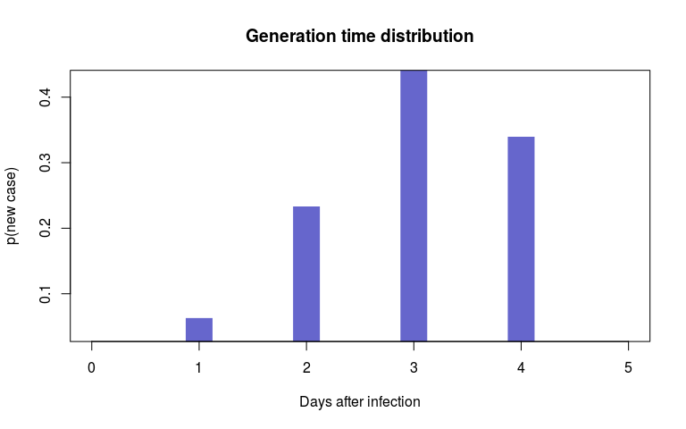
Running the analysis with defaults
By default, outbreaker2 uses the settings defined by create_config(); see the documentation of this function for details. Note that the main function of outbreaker2 is called outbreaker (without number). The function’s arguments are:
args(outbreaker)
#> function (data = outbreaker_data(), config = create_config(),
#> priors = custom_priors(), likelihoods = custom_likelihoods(),
#> moves = custom_moves())
#> NULLThe only mandatory input really is the data. For most cases, customising the method will be done through config and the function create_config(), which creates default and alters settings such as prior parameters, length and rate of sampling from the MCMC, and definition of which parameters should be estimated (‘moved’). The last arguments of outbreaker are used to specify custom prior, likelihood, and movement functions, and are detailed in the ‘Customisation’ vignette.
Let us run the analysis with default settings:
dna <- fake_outbreak$dna
dates <- fake_outbreak$sample
w <- fake_outbreak$w
data <- outbreaker_data(dna = dna, dates = dates, w_dens = w)
## we set the seed to ensure results won't change
set.seed(1)
res <- outbreaker(data = data)This analysis will take around 40 seconds on a modern computer. Note that outbreaker2 is slower than outbreaker for the same number of iterations, but the two implementations are actually different. In particular, outbreaker2 performs many more moves than the original package for each iteration of the MCMC, resulting in more efficient mixing. In short: outbreaker2 is slower, but it requires far less iterations.
Results are stored in a data.frame with the special class outbreaker_chains:
class(res)
#> [1] "outbreaker_chains" "data.frame"
dim(res)
#> [1] 201 98
res
#>
#>
#> ///// outbreaker results ///
#>
#> class: outbreaker_chains data.frame
#> dimensions 201 rows, 98 columns
#> ancestries not shown: alpha_1 - alpha_30
#> infection dates not shown: t_inf_1 - t_inf_30
#> intermediate generations not shown: kappa_1 - kappa_30
#>
#> /// head //
#> step post like prior mu pi eps lambda
#> 1 1 -1107.8826 -1109.2369 1.354240 1.000000e-04 0.9000000 0.5 0.05
#> 2 50 -578.9511 -575.3688 -3.582349 4.768468e-05 0.5200261 0.5 0.05
#> 3 100 -637.7103 -634.2987 -3.411650 6.265339e-05 0.5299842 0.5 0.05
#>
#> ...
#> /// tail //
#> step post like prior mu pi eps lambda
#> 199 9900 -664.9758 -657.7465 -7.229297 6.263085e-05 0.3467709 0.5 0.05
#> 200 9950 -636.7354 -631.0746 -5.660759 5.938763e-05 0.4127928 0.5 0.05
#> 201 10000 -614.8231 -610.3060 -4.517143 9.806203e-05 0.4687261 0.5 0.05Each row of res contains a sample from the MCMC. For each, informations about the step (iteration of the MCMC), log-values of posterior, likelihood and priors, and all parameters and augmented data are returned. Ancestries (i.e. indices of the most recent ancestral case for a given case), are indicated by alpha_[index of the case], dates of infections by t_inf_[index of the case], and number of generations between cases and their infector / ancestor by kappa_[index of the case]:
names(res)
#> [1] "step" "post" "like" "prior" "mu" "pi"
#> [7] "eps" "lambda" "alpha_1" "alpha_2" "alpha_3" "alpha_4"
#> [13] "alpha_5" "alpha_6" "alpha_7" "alpha_8" "alpha_9" "alpha_10"
#> [19] "alpha_11" "alpha_12" "alpha_13" "alpha_14" "alpha_15" "alpha_16"
#> [25] "alpha_17" "alpha_18" "alpha_19" "alpha_20" "alpha_21" "alpha_22"
#> [31] "alpha_23" "alpha_24" "alpha_25" "alpha_26" "alpha_27" "alpha_28"
#> [37] "alpha_29" "alpha_30" "t_inf_1" "t_inf_2" "t_inf_3" "t_inf_4"
#> [43] "t_inf_5" "t_inf_6" "t_inf_7" "t_inf_8" "t_inf_9" "t_inf_10"
#> [49] "t_inf_11" "t_inf_12" "t_inf_13" "t_inf_14" "t_inf_15" "t_inf_16"
#> [55] "t_inf_17" "t_inf_18" "t_inf_19" "t_inf_20" "t_inf_21" "t_inf_22"
#> [61] "t_inf_23" "t_inf_24" "t_inf_25" "t_inf_26" "t_inf_27" "t_inf_28"
#> [67] "t_inf_29" "t_inf_30" "kappa_1" "kappa_2" "kappa_3" "kappa_4"
#> [73] "kappa_5" "kappa_6" "kappa_7" "kappa_8" "kappa_9" "kappa_10"
#> [79] "kappa_11" "kappa_12" "kappa_13" "kappa_14" "kappa_15" "kappa_16"
#> [85] "kappa_17" "kappa_18" "kappa_19" "kappa_20" "kappa_21" "kappa_22"
#> [91] "kappa_23" "kappa_24" "kappa_25" "kappa_26" "kappa_27" "kappa_28"
#> [97] "kappa_29" "kappa_30"Analysing the results
Graphics
Results can be visualised using plot, which has several options and can be used to derive various kinds of graphics (see ?plot.outbreaker_chains). The basic plot shows the trace of the log-posterior values, which is useful to assess mixing:
plot(res)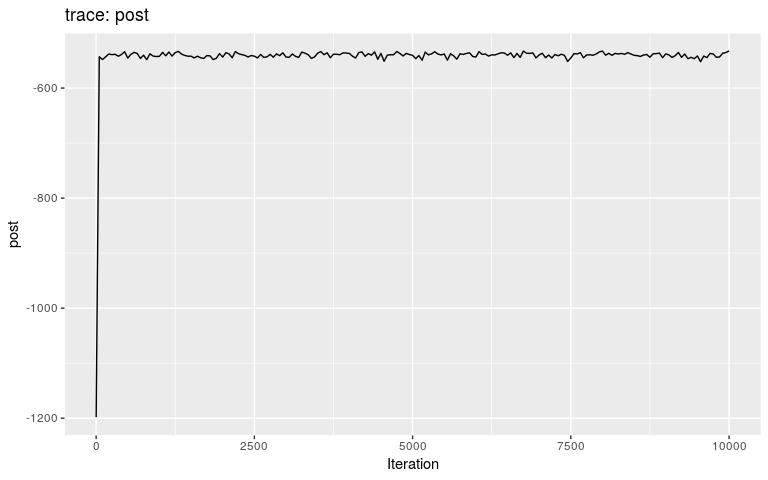
The second argument of plot can be used to visualise traces of any other column in res:
plot(res, "prior")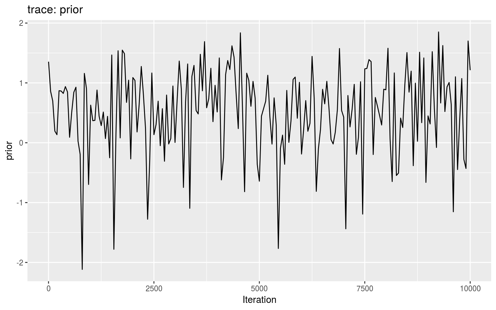
plot(res, "mu")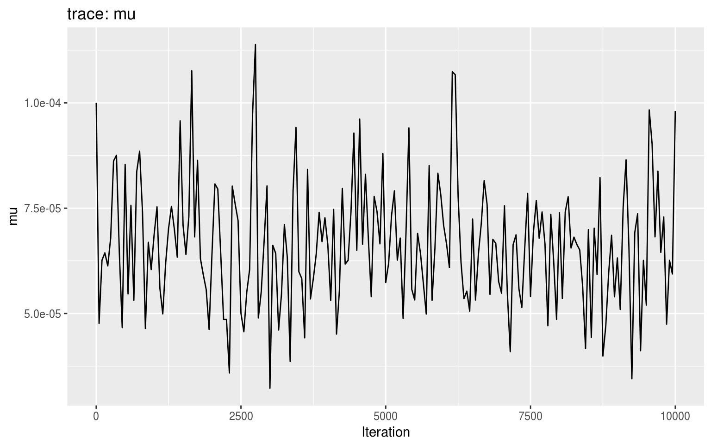
plot(res, "t_inf_15")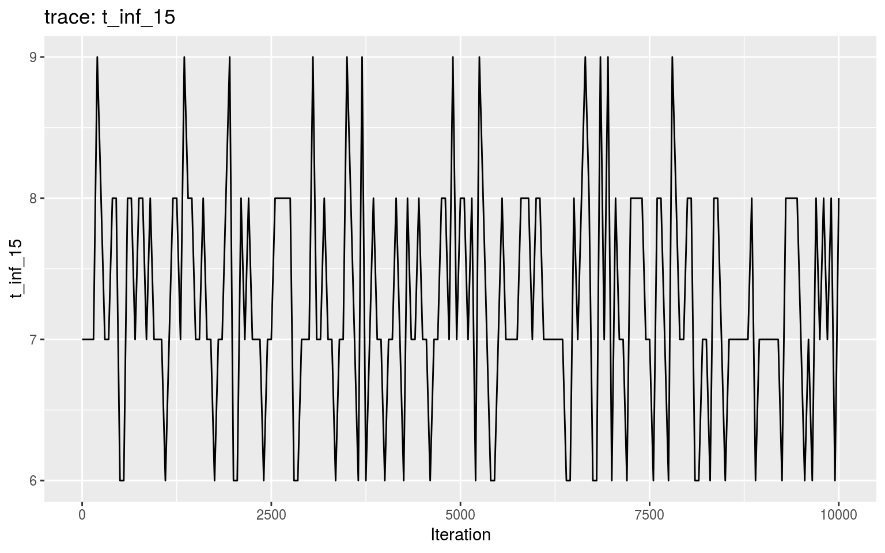
burnin can be used to discard the first iterations prior to mixing:
## compare this to plot(res)
plot(res, burnin = 2000)
type indicates the type of graphic to plot; roughly:
tracefor traces of the MCMC (default)hist,densityto assess distributions of quantitative valuesalpha,networkto visualise ancestries / transmission tree; note thatnetworkopens up an interactive plot and requires a web browser with Javascript enabled; the argumentmin_supportis useful to select only the most supported ancestries and avoid displaying too many linkskappato visualise the distributions generations between cases and their ancestor / infector
Here are a few examples:
plot(res, "mu", "hist", burnin = 2000)
#> `stat_bin()` using `bins = 30`. Pick better value with `binwidth`.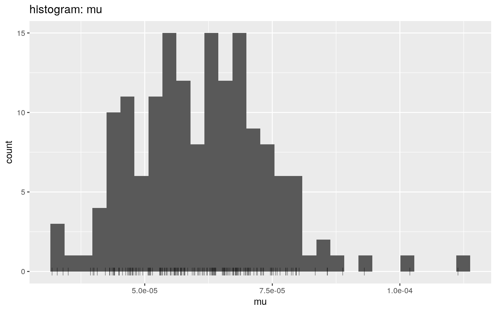
plot(res, "mu", "density", burnin = 2000)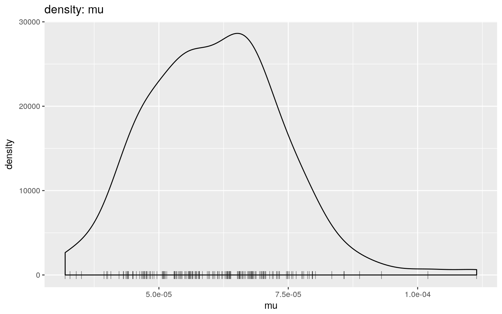
plot(res, type = "alpha", burnin = 2000)
#> Warning: Removed 480 rows containing missing values (geom_point).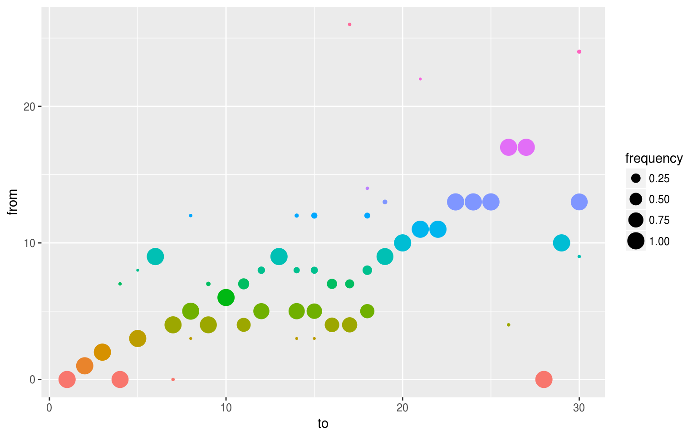
plot(res, type = "t_inf", burnin = 2000)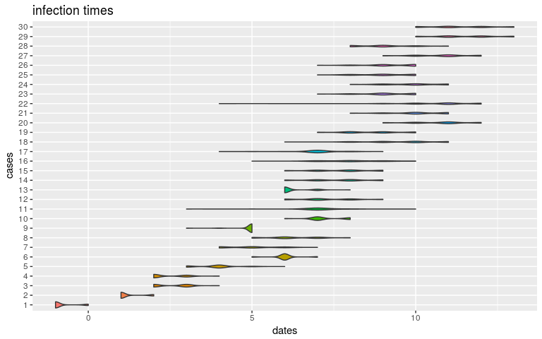
plot(res, type = "kappa", burnin = 2000)
#> Warning: Removed 480 rows containing missing values (geom_point).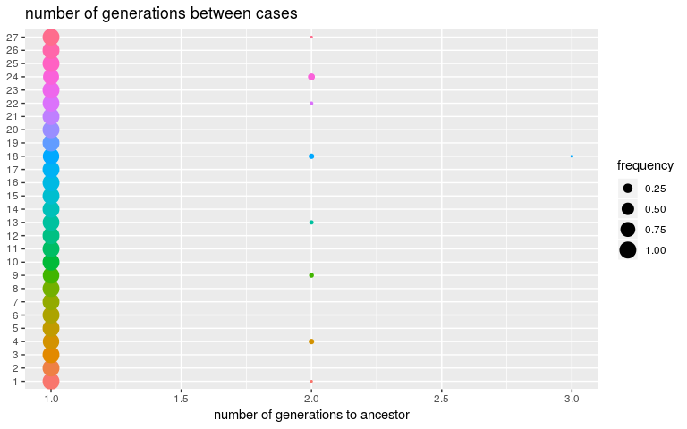
plot(res, type = "network", burnin = 2000, min_support = 0.01)
Using summary
The summary of results derives various distributional statistics for posterior, likelihood and prior densities, as well as for the quantitative parameters. It also builds a consensus tree, by finding for each case the most frequent infector / ancestor in the posterior samples. The corresponding frequencies are reported as ‘support’. The most frequent value of kappa is also reported as ‘generations’:
summary(res)
#> $step
#> first last interval n_steps
#> 1 10000 50 201
#>
#> $post
#> Min. 1st Qu. Median Mean 3rd Qu. Max.
#> -1108.0 -637.8 -612.3 -615.9 -591.2 -515.9
#>
#> $like
#> Min. 1st Qu. Median Mean 3rd Qu. Max.
#> -1109.0 -632.6 -608.6 -611.8 -587.3 -515.8
#>
#> $prior
#> Min. 1st Qu. Median Mean 3rd Qu. Max.
#> -8.147 -4.887 -3.938 -4.042 -2.984 1.354
#>
#> $mu
#> Min. 1st Qu. Median Mean 3rd Qu. Max.
#> 3.226e-05 5.529e-05 6.566e-05 6.642e-05 7.417e-05 1.138e-04
#>
#> $pi
#> Min. 1st Qu. Median Mean 3rd Qu. Max.
#> 0.3132 0.4498 0.4999 0.5020 0.5557 0.9000
#>
#> $tree
#> from to time support generations
#> 1 NA 1 -1 NA NA
#> 2 1 2 1 1.0000000 1
#> 3 2 3 3 1.0000000 1
#> 4 NA 4 2 NA NA
#> 5 3 5 4 0.9900498 1
#> 6 9 6 6 0.9552239 1
#> 7 4 7 5 1.0000000 1
#> 8 5 8 6 0.9601990 1
#> 9 4 9 5 0.9800995 1
#> 10 6 10 7 0.9552239 1
#> 11 4 11 7 0.7213930 2
#> 12 5 12 7 0.9004975 1
#> 13 9 13 6 1.0000000 2
#> 14 5 14 8 0.7960199 2
#> 15 5 15 8 0.8457711 2
#> 16 4 16 8 0.6368159 3
#> 17 4 17 7 0.8258706 2
#> 18 5 18 10 0.6119403 3
#> 19 9 19 9 1.0000000 3
#> 20 10 20 11 1.0000000 3
#> 21 11 21 10 0.9800995 3
#> 22 11 22 11 0.9850746 3
#> 23 13 23 9 0.9950249 3
#> 24 13 24 10 1.0000000 3
#> 25 13 25 9 0.9950249 3
#> 26 17 26 9 0.9950249 3
#> 27 17 27 11 1.0000000 3
#> 28 NA 28 9 NA NA
#> 29 10 29 12 1.0000000 3
#> 30 13 30 11 0.9850746 3Customising settings and priors
As said before, most customisation can be achieved via create_config. In the following, we make the following changes to the defaults:
increase the number of iterations to 20,000
set the sampling rate to 20
use a star-like initial tree
disable to movement of
kappa, so that we assume that all cases have observedset a lower rate for the exponential prior of
mu(10 instead of 1000)
config2 <- create_config(n_iter = 2e4,
sample_every = 20,
init_tree ="star",
move_kappa = FALSE,
prior_mu = 10)
set.seed(1)
res2 <- outbreaker(data, config2)
plot(res2)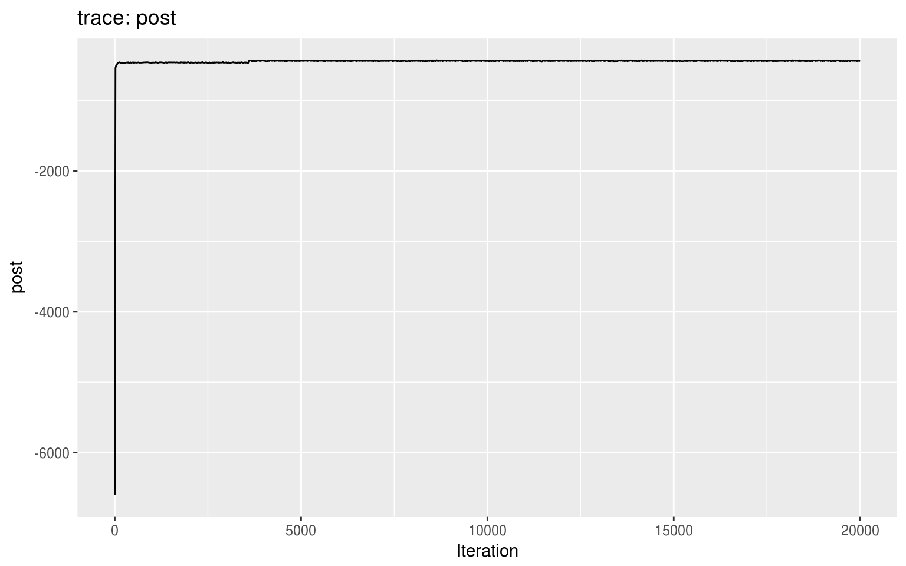
plot(res2, burnin = 2000)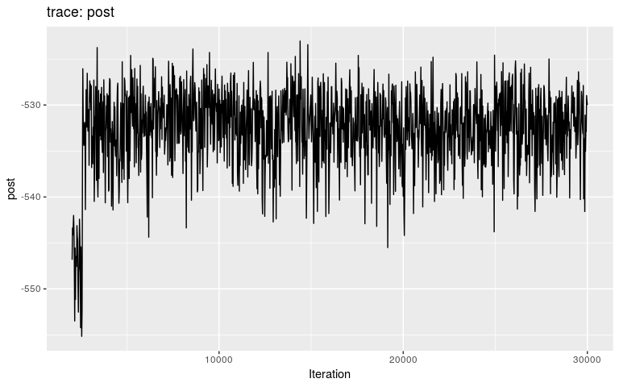
We can see that the burnin is around 3,000 iterations (i.e. after the initial step corresponding to a local optimum). We get the consensus tree from the new results, and compare the inferred tree to the actual ancestries stored in the dataset (fake_outbreak$ances):
summary(res2, burnin = 4000)
#> $step
#> first last interval n_steps
#> 4020 20000 20 800
#>
#> $post
#> Min. 1st Qu. Median Mean 3rd Qu. Max.
#> -449.4 -436.0 -433.4 -433.7 -431.1 -424.4
#>
#> $like
#> Min. 1st Qu. Median Mean 3rd Qu. Max.
#> -453.1 -440.3 -437.8 -438.0 -435.5 -429.0
#>
#> $prior
#> Min. 1st Qu. Median Mean 3rd Qu. Max.
#> 3.060 4.269 4.434 4.365 4.539 4.602
#>
#> $mu
#> Min. 1st Qu. Median Mean 3rd Qu. Max.
#> 7.285e-05 1.220e-04 1.352e-04 1.368e-04 1.509e-04 2.163e-04
#>
#> $pi
#> Min. 1st Qu. Median Mean 3rd Qu. Max.
#> 0.8423 0.9634 0.9813 0.9741 0.9928 0.9998
#>
#> $tree
#> from to time support generations
#> 1 NA 1 -1 NA NA
#> 2 1 2 1 1.00000 1
#> 3 2 3 3 0.99625 1
#> 4 NA 4 3 NA NA
#> 5 3 5 4 0.97625 1
#> 6 4 6 5 0.96875 1
#> 7 4 7 5 1.00000 1
#> 8 5 8 6 0.94625 1
#> 9 6 9 6 1.00000 1
#> 10 6 10 7 1.00000 1
#> 11 7 11 7 0.64375 1
#> 12 5 12 7 0.85125 1
#> 13 9 13 7 1.00000 1
#> 14 5 14 7 0.72875 1
#> 15 5 15 7 0.73250 1
#> 16 7 16 8 0.78375 1
#> 17 7 17 7 0.62125 1
#> 18 8 18 9 0.42875 1
#> 19 9 19 8 1.00000 1
#> 20 10 20 10 0.97375 1
#> 21 11 21 10 0.98000 1
#> 22 11 22 10 0.99875 1
#> 23 13 23 9 1.00000 1
#> 24 13 24 10 1.00000 1
#> 25 13 25 9 0.99875 1
#> 26 17 26 9 1.00000 1
#> 27 17 27 10 1.00000 1
#> 28 NA 28 9 NA NA
#> 29 10 29 11 1.00000 1
#> 30 13 30 11 1.00000 1
tree2 <- summary(res2, burnin = 4000)$tree
comparison <- data.frame(case = 1:30,
inferred = paste(tree2$from),
true = paste(fake_outbreak$ances),
stringsAsFactors = FALSE)
comparison$correct <- comparison$inferred == comparison$true
comparison
#> case inferred true correct
#> 1 1 NA NA TRUE
#> 2 2 1 1 TRUE
#> 3 3 2 2 TRUE
#> 4 4 NA NA TRUE
#> 5 5 3 3 TRUE
#> 6 6 4 4 TRUE
#> 7 7 4 4 TRUE
#> 8 8 5 5 TRUE
#> 9 9 6 6 TRUE
#> 10 10 6 6 TRUE
#> 11 11 7 7 TRUE
#> 12 12 5 8 FALSE
#> 13 13 9 9 TRUE
#> 14 14 5 5 TRUE
#> 15 15 5 5 TRUE
#> 16 16 7 7 TRUE
#> 17 17 7 7 TRUE
#> 18 18 8 8 TRUE
#> 19 19 9 9 TRUE
#> 20 20 10 10 TRUE
#> 21 21 11 11 TRUE
#> 22 22 11 11 TRUE
#> 23 23 13 13 TRUE
#> 24 24 13 13 TRUE
#> 25 25 13 13 TRUE
#> 26 26 17 17 TRUE
#> 27 27 17 17 TRUE
#> 28 28 NA NA TRUE
#> 29 29 10 10 TRUE
#> 30 30 13 13 TRUE
mean(comparison$correct)
#> [1] 0.9666667Let’s visualise the posterior trees:
plot(res2, type = "network", burnin = 4000, min_support = 0.01)